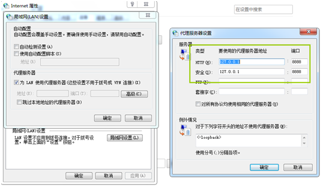
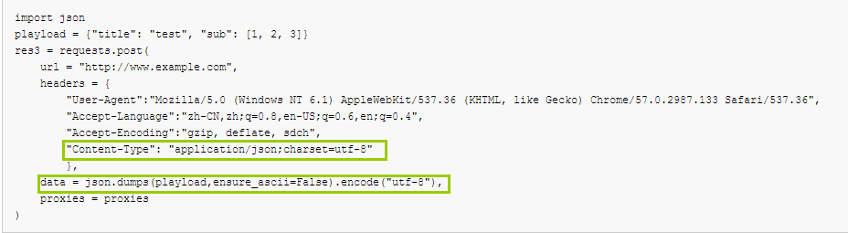

原文连接:https://www.cnblogs.com/bainianminguo/p/12078838.html
最近给公司的新员工培训web api接口测试，发现这一块的内部需求还比较大，不仅仅是新员工，包括一些经常写接口测试老员工，对接口也是似懂非懂的，所以我绝对有必要写一篇博客来普及下。
在我们公司内部，一般使用ruby或者python语言来做接口测试，这篇文件主要是讲解使用python语言来做接口测试。
如果要做接口测试，其实只要会抓包，会组装http请求头和请求体，会检查http响应头和响应体，就可以可以，所以我们需要需要掌握下面这些知识！！！另外还需要掌握一些常用的测试框架，比如unittest和pytest等
1、python语言requests库
2、http协议基本知识，包括请求头，响应头、请求体、响应体
3、session-cookie（如果大家对session和cookies不熟悉，可以看我之前写 的博客）
https://www.cnblogs.com/bainianminguo/p/9147418.html
https://www.cnblogs.com/bainianminguo/p/8850043.html
4、fiddler抓包工具
5、测试框架，这里不会讲，大家有兴趣可以看下我之前写的博客，介绍unittest测试框架
https://www.cnblogs.com/bainianminguo/p/11706244.html
https://www.cnblogs.com/bainianminguo/p/11616526.html
下面进入正题，听我娓娓道来。
一、http协议
1、简介
web api接口大都是基于http协议的，所以要进行接口测试，首先要了解HTTP协议的基础知识。
HTTP协议全称是超文本传输协议。由于HTTP最初是用来在浏览器和网站服务器之间传输超文本的（网页，视频，图片等）信息的。由于HTTP简洁易用，后来，不仅仅是浏览器和服务器之间使用它，服务器和服务器之间，手机app和服务器之间，都广泛的采用，成了一个软件系统间通信的首选协议之一。
HTTP协议有好几个版本，包括0.9、1.0、1.1、1.2，当前最广泛使用的是HTTP/1.1版本
HTTP协议最大的特点是通讯双方分为客户端和服务端。
由于目前HTTP是基于TCP协议，所以要进行通讯，客户端必须先河服务端创建TCP连接。而且HTTP双方的信息交互，必须要这样一种形式
a、客户端先发送http请求（request）给服务器
b、然后服务器发送http响应（response）给客户端
c、特别要注意，在http协议中，服务端是不能主动发消息给客户端的
流程图如下
http1.1版本先创建TCP连接，然后在这个连接内可以进行多次交互信息，这里注意，是客户端主动给服务端发请求的
二、http请求
下面是http的get请求和http的post请求的示例
GET /mgr/login HTTP/1.1
Host: 192.168.3.1
User-Agent:Mozilla/5.0 (Windows NT 6.1) AppleWebKit/537.36 (KHTML, like Gecko) Chrome/57.0.2987.133 Safari/537.36
Accept-Language:zh-CN,zh;q=0.8,en-US;q=0.6,en;q=0.4
Accept-Encoding:gzip, deflate, sdch
POST /api/test HTTP/1.1
Host:192.168.3.1
Origin:http://192.168.3.1
Referer:http://192.168.3.1/html/index.html
User-Agent:Mozilla/5.0 (Windows NT 6.1) AppleWebKit/537.36 (KHTML, like Gecko) Chrome/57.0.2987.133 Safari/537.36
Content-Type:application/json;charset=UTF-8
Content-Length:214
Accept-Language:zh-CN,zh;q=0.8,en-US;q=0.6,en;q=0.4
Accept-Encoding:gzip, deflate
{"csrf":{"csrf_param":"35iUJau6mdmmJeIg0N8W80OmoMK8A2Kr","csrf_token":"KfKSfpH0hnsSc0uQyX6ZUB8i8KRFSZ0C"},"data":{"username":"admin","firstnonce":"c7eb46830667147fc62838e7ba9a0c09187d28bafa45b133897efa9d4e46a880"}}
一个http请求消息由下面几个部分组成
a、请求行 request line
是http的第一行的内容。表示要操作什么资源，使用的http协议的版本是什么，里面包含了三部分消息。请求的方法、操作资源的地址、协议的版本号
GET https://securepubads.g.doubleclick.net/pagead/adview?ai=C3a-FX0L-XZ7nH8Hn2gT1vpKQBofP2MxZl96OgJYKsfz66E0QASC3tpYCYJ0ByAEBqQIDDuevOSiDPuACAKgDAcgDCqoE5AFP0PxttPf1dpFDQI04YpU7K4Qhq0WGx-H6233i9kddKMRmZ8rfGeWBQrr479rzo9D8pahF4GnAvGpwUHZntCL7HcXpQi_xqWQt3alVu7iKmqOQ2r6wzaMJli0vfW_rWq9l6hMmC3THotaE3aaCu8-yQ18_cRaCfgKTCRRx0Eze2gWYfJic33lRDI5NHSVfSlXDsc3SItNtoxG4tZhzRdw3omfX6oWwyvxUVboGzJwd8Rfij2Abfe4gFMviIlfhgVkNNRVv3U-Zhi6Xu5dTGhbV952-dpPUto1PgnRuTQpfsnvJ9UbABKmyupce4AQBkgUECAQYAZIFBAgFGASAB9GIrh6oB47OG6gH1ckbqAeT2BuoB7oGqAfy2RuoB6a-G6gH7NUb2AcB8gcEEPCNAtIIBwiAYRABGB2ACgHICwHYEwKIFAE&sigh=RmPL7gCMtsg&tpd=AGWhJmu9ZlDGyMSGWoSTQKbLoOl12TOWdSdugT6uZH2DizpViw HTTP/1.1
b、请求方法
Get请求
从服务器上获取资源信息，这是一种最常见的请求
比如要从服务器获取网页资源，获取图片资源，获取用户信息数据等
Post请求
添加资源信息到服务器进行处理，例如要添加用户信息，上传图片数据到服务器等，具体的数据信息，通常在HTTP请求的消息体中，这个后面会讲
Put请求
请求服务器更新资源信息
比如要更新用户、姓名地址等等
具体的更新的数据信息，通常在HTTP的消息体中，后面会讲
Delete请求
请求服务器删除资源信息
比如要删除某个用户，某个资源等等
HTT片协议还有许多其他的方法，比如PATCH,HEAD等，不是特别常用，暂且不讲
c、资源地址
d、请求头
这里业务大家有个疑问，我的http请求是建立在tcp连接的基础上的，为什么这里还要传递一个host呢？因为我们知道ip地址了，但是这个ip地址上可能有多个网站，所以这里要指定我们要访问的具体是哪个网站
请求体的http请求下面的内容，里面存放一些信息。
比如请求发送的服务端的域名是什么，希望接受的响应消息使用语言，请求消息体的长度等等；
通常请求头有好多个，一个请求头占据一行
单个请求头的格式是：名字：值
e、请求体
请求的url，请求头中可存放一些数据信息，但是有些数据信息，往往需求存放在消息体中国；特别是post，put的请求，添加，修改的数据信息通常都是存放在请求消息体中的；
如果HTTP请求有消息体，协议规定，需要在消息头和消息体之间插入一个空行，隔开他们；
请求消息体中保存了要提交个服务端的数据信息
比如：客户端要上传一个文件给服务器，就可以通过http请求发送文件数据给服务端；
文件的数据就应该在请求的消息体中
请求的消息体通常是某种格式的字符串，常见的有三种，但是最常用的还是json格式
Json
Xml
www-form-urlencoded
后面会有详细的描述
request payload就是一个请求体，下面这个格式就是Json格式的消息体
请求体中不仅仅可以存放字符串，还可以放二进制信息，比如以下视频、文本之类的，用于我们上传文件的场景，不过通常接口测试不会涉及二进制信息，都是字符串信息，后面我会专门写一篇博客来介绍如何上传文件
2、http响应
响应的消息我们重点关注状态码
a、2xx
通常表示请求消息没有问题，而且服务器也正确处理了
b、3xx
这是重定向响应，常见的是是301、302，表示客户端的这个请求的url地址已经改变了，需要客户端重启发起一个请求到另外一个url
c、400
表示客户端请求不符合接口要求，比如格式完全错误
d、401
表示客户端需要先认证才能发送请求
e、403
表示客户端美誉哦权限要求服务器处理这样的请求，比如普通用户的没有管理员的权限
f、404
表示客户端方法的url不存在
g、5xx
表示服务端在处理请求中，发送了未知错误，通常是服务端的代码设计的问题，或者服务端系统出了故障了
有了以上的基础，我们就可以做web的接口测试了
二、接口测试
1、什么是接口测试
我们通常说的接口测试，其实就是对软件系统的消息交互接口的参数，消息交互接口是软件系统和其他软件系统交互的那部分，比如，你正在用浏览器使用一个网站，浏览器和后端服务器之间就是消息交互的；在比如，你手机上使用美团订餐，美团app和美团服务器之间，也是消息交互的，当你提交订单，使用功能微信支付的时候，美团服务器和微信服务器之间也是通过消息交互的
接口测试就是
依据接口规范，写出测试用例
使用软件工具，直接通过消息接口对被测系统进行消息收发
验证被测系统行为是否正确
目前软件系统之间的消息接口大部分是基于HTTP协议收发的
HTTP协议的特点是，客户端发出一个HTTP请求给服务端，服务端就返回一个HTTP相应，好像API程序调用；
所有接口测试通常又被称为API接口测试或者WEB API接口测试
API接口传递数据信息是通过HTTP协议进行收发的，网站获取网页，图片，css等资源，也是通过HTTP协议进行收发的
那么这两者有什么区别呢？为什么获取网页，图片这些HTTP消息不叫做API接口消息呢？
网页，图片，css这些资源都是静态资源，就是一个一个文件存储在服务器中，获取这些消息，服务端直接读取文件，返回给客户端即可，无需特别的数据处理
而API接口请求消息，通常都需要服务端程序进行一番处理，比如对请求的权限检查，从数据库中读出数据，进行消息过滤和格式转换，最后在HTTP响应中返回给客户端
接口测试需要工具和被测系统之间进行消息的收发，这个工具可以是别人开发的，也可以自己开发，基于HTTP的接口测试工具有Postman，Jmeter等
2、fiddler工具
这里我们使用python语言中的requests库和fiddler抓包工具
Fiddler：代理式抓包
大家一定会反问，我的浏览器就是可以抓包了，为什么还要安装fiddler，多此一举？
其实不然，因为我们是用python的requests库去做接口测试，浏览器是抓不到我们发的请求的，所以需要安装fiddler来抓包，确保我们发送的http请求是正确的
fiddler启动后，会启动一个代理服务器，监听在8888端口上，http客户端需要设置fiddler作为代理，把http请求消息发送给fiddler，fiddler转发http消息给服务端，服务端返回消息也是先返回给fiddler。再由fidddler转发给客户端
如下图所示
fiddler安装后，会默认配置操作系统级别的代理，可以通过下面的方式查看

安装fiddler需要配置一个过滤项，因为默认fiddler是作为一个系统代理，所以fiddler抓到包会很多，所以需要配置一个过滤项
同样，这里的配置是支持通配符的
抓包
查看原始的请求消息
我们可以在python代码里配置代理，然后通过fiddler抓包来判断我们发的包是否准确，这里需要配置http和https协议的代理
import requests
proxies = {
"http":"127.0.0.1:8888",
"http1": "127.0.0.1:8888"
}
res = requests.get(
url = "htt://www.baidu.com",
proxies = proxies
)
我们可以通过fiddler进行抓包
fiddler如果 要配置手机抓包代理，需要保证安装fiddler和手机在同一个局域网中
在手机的无线网络处配置代理，代理指向运行fiddler的电脑的ip即可，端口是8888
3、requests库的请求
a、构建请求的url参数，这个一般在get请求使用较多
什么是url参数
比如
https://www.baidu.com/s?wd=iphone&res_spt=1
问号后面的部分wd=iphone&res_spt=1就是url参数，每个参数之间就用&隔开的。
上面的例子中有两个参数wd和res_spt，他们的值分别iphone和1
url参数参数的格式，有个术语叫urlencoded格式
使用requests发送HTTP请求，url里面的参数，通常可以直接在url里面，比如
但是有的时候，我们的url中参数里面有特殊字符，比如参数中的值包含了一个&这个符号或者参数很多的话，我们可以采用下面的方法，构建一个字典，然后把这个字典传递给params参数
也可以用下面的方式传递url参数
res = requests.get(
url = "http://www.baidu.com/",
params = {
"wd":"iphone",
"res_spt":"1"
},
proxies = proxies
)
b、构建请求消息头
有的时候，我们需要自定义一些http的消息头
每个消息头也就是一种键值对的格式存放数据，在requests，只需要把抓包中的请求头信息放在一个字典中，然后传递headers即可
res = requests.get(
url = "http://www.baidu.com/",
headers = {
"Host": "192.168.3.1",
"User-Agent":"Mozilla/5.0 (Windows NT 6.1) AppleWebKit/537.36 (KHTML, like Gecko) Chrome/57.0.2987.133 Safari/537.36",
"Accept-Language":"zh-CN,zh;q=0.8,en-US;q=0.6,en;q=0.4",
"Accept-Encoding":"gzip, deflate, sdch"
},
params = {
"wd":"iphone",
"res_spt":"1"
},
proxies = proxies
)
c、构建请求的消息体
当我们进行api接口测试的时候，根据接口规范，构建的http请求，通常需要构建消息体
http的消息体就是一串字节，里面包含了一些信息，这些信息可能是文本，比如html网页作为消息体，也可能是视频，音频信息
消息体可能很短，只有一个字节，比如字符a，也可能很长，有几百个字节
最常见的消息体格式当然是表示网页内容的html
当时在web api接口测试中，常见的HTTP消息体的格式有三种，urlencoded，json，xml
注意：消息体采用什么格式，是由开发人员设计决定的，开发人员也可以自定义格式，但是我们通常不会自定义的
xml格式
前面时候了，消息体就是存放信息的地方，信息的格式完全取决于设计者的需求，如果设计者决定使用xml格式传输一段信息，用requests库，只需要这样就可以了
playload = """
<?xml version="1.0"?>
<methodCall>
<methodName>examples.getStateName</methodName>
<params>
<param>
<value><i4>41</i4></value>
</param>
</params>
</methodCall>"""
res2 = requests.post(
url = "http://www.baidu.com/",
headers = {
"Host": "192.168.3.1",
"User-Agent":"Mozilla/5.0 (Windows NT 6.1) AppleWebKit/537.36 (KHTML, like Gecko) Chrome/57.0.2987.133 Safari/537.36",
"Accept-Language":"zh-CN,zh;q=0.8,en-US;q=0.6,en;q=0.4",
"Accept-Encoding":"gzip, deflate, sdch",
"Content-Type": "text/xml"
},
data=playload.encode("utf-8"),
proxies = proxies
)
由于消息体都是字节串，我们直接把字符串使用utf-8解码，然后传递给data参数即可，这里需要注意，需要设置Content-type=text/xml
使用data参数，存储消息体的数据，如果传递的是一个字符串，在http请求中，需要编码为字节码，默认的编码格式latin-1，这种编码格式是不支持中文的；通常我们使用utf-8的编码格式
通过fiddler抓包
查看请求的原始信息
Urlencoded格式
这种格式的消息体就是一个key-value键值对的格式存放数据，如下所示
key1=value1&key2=value2
Requests发送这样的数据，当然可以直接把这种格式的字符串传入到data参数里；但是这样写的话，如果参数本身就有特殊字符，比如等号，就会有歧义
我们还有更方便的方法，只需要将这些键值对的数据构建一个字典，如下
playload = {
"key1":"value1",
"key2":"value2"
}
res2 = requests.post(
url = "http://www.example.com",
headers = {
"User-Agent":"Mozilla/5.0 (Windows NT 6.1) AppleWebKit/537.36 (KHTML, like Gecko) Chrome/57.0.2987.133 Safari/537.36",
"Accept-Language":"zh-CN,zh;q=0.8,en-US;q=0.6,en;q=0.4",
"Accept-Encoding":"gzip, deflate, sdch",
"Content-Type": "application/x-www-form-urlencoded;charset=utf-8"
},
data=playload,
proxies = proxies
)
这里需要注意下面2个地方
通过fiddler抓包
先看请求头
这里明显可以看到，请求头和请求体中间有一个空行

看下请求体中的数据
Json格式的消息体
Json字符串一律用双引号，不能用单引号
Json字符串最后一个元素的后面不能加逗号
其实我们要把数据放到消息体中，最终的数据都是字节串，也就是把str.encode()
json格式当前被web api接口广泛采用
json是一种表示数据的语法格式，他和python表示数据的语法非常像
json格式有两种方式构建消息体
方式1
playload = {"title": "test", "sub": [1, 2, 3]}
res2 = requests.post(
url = "http://www.example.com",
headers = {
"User-Agent":"Mozilla/5.0 (Windows NT 6.1) AppleWebKit/537.36 (KHTML, like Gecko) Chrome/57.0.2987.133 Safari/537.36",
"Accept-Language":"zh-CN,zh;q=0.8,en-US;q=0.6,en;q=0.4",
"Accept-Encoding":"gzip, deflate, sdch",
"Content-Type": "application/json;charset=utf-8"
},
json=playload,
proxies = proxies
)
注意下面这里
方式2
import json
playload = {"title": "test", "sub": [1, 2, 3]}
res3 = requests.post(
url = "http://www.example.com",
headers = {
"User-Agent":"Mozilla/5.0 (Windows NT 6.1) AppleWebKit/537.36 (KHTML, like Gecko) Chrome/57.0.2987.133 Safari/537.36",
"Accept-Language":"zh-CN,zh;q=0.8,en-US;q=0.6,en;q=0.4",
"Accept-Encoding":"gzip, deflate, sdch",
"Content-Type": "application/json;charset=utf-8"
},
data = json.dumps(playload,ensure_ascii=False).encode("utf-8"),
proxies = proxies
)
注意下面这里

4、requests库的响应
a、检查HTTP响应状态码
要检查HTTP响应的状态码，直接通过response对象的status_code属性获取
import json
playload = {"title": "test", "sub": [1, 2, 3]}
res3 = requests.post(
url = "http://www.example.com",
headers = {
"User-Agent":"Mozilla/5.0 (Windows NT 6.1) AppleWebKit/537.36 (KHTML, like Gecko) Chrome/57.0.2987.133 Safari/537.36",
"Accept-Language":"zh-CN,zh;q=0.8,en-US;q=0.6,en;q=0.4",
"Accept-Encoding":"gzip, deflate, sdch",
"Content-Type": "application/json;charset=utf-8"
},
data = json.dumps(playload,ensure_ascii=False).encode("utf-8"),
proxies = proxies
)
print(res3.status_code)
运行结果发现返回的结果状态码就是200
如果故意写一个不存在的地址
import requests
proxies = {
"http":"127.0.0.1:8888",
"http1": "127.0.0.1:8888"
}
res = requests.get(
url = "http://192.168.3.1/html/index4.html",
proxies = proxies
)
print(res.status_code)
运行结果发现返回的状态码就是404
b、检查响应的消息头
要检查HTTP响应的消息头，直接通过response对象的header属性获取
import json
import requests
import pprint
playload = {"title": "test", "sub": [1, 2, 3]}
proxies = {
"http":"127.0.0.1:8888",
"http1": "127.0.0.1:8888"
}
res3 = requests.post(
url = "http://www.example.com",
headers = {
"User-Agent":"Mozilla/5.0 (Windows NT 6.1) AppleWebKit/537.36 (KHTML, like Gecko) Chrome/57.0.2987.133 Safari/537.36",
"Accept-Language":"zh-CN,zh;q=0.8,en-US;q=0.6,en;q=0.4",
"Accept-Encoding":"gzip, deflate, sdch",
"Content-Type": "application/json;charset=utf-8"
},
data = json.dumps(playload,ensure_ascii=False).encode("utf-8"),
proxies = proxies
)
print(pprint.pprint(dict(res3.headers)))
结果如下
c、检查响应消息体的文本内容
前面我们已经说过，要获取响应的消息体的文本内容，直接通过response对象的text属性即可获取
import requests
import pprint
#
proxies = {
"http":"127.0.0.1:8888",
"http1": "127.0.0.1:8888"
}
#
res = requests.get(
url = "http://mirrors.sohu.com",
proxies = proxies
)
#
#
# print(res.text)
print(pprint.pprint(dict(res.headers)))
print(res.encoding)
响应体其实也是字节串，但是我们调用text方法没有设置解码格式，他是怎么解码？他是根据响应头的contend-type来决定解码格式，有的时候会指定，但是大部分不会指定
我们
我们可以看到我们打印的解码格式，和content-Type中是一样的
如果有的时候中文解码出来是乱码，我们可以手动指定解码格式
如果我们想打印响应体的字节串可以使用content方法
5、session
a、原理
我们来思考一个问题，一个网站，比如一个购物网站，服务成千上万的的客户，那么多客户同时访问网站，挑选物品，购物估算，都是通过hTTP请求来访问网站的，这个网站的服务端怎么区分每个HTTP请求呢？网站的服务端是怎么实现的？
一种最常见的方式就是：通过Session+cookies机制
session翻译成中文就是会话的意思
session大体的原理如下面2个图
http协议规定了，网站的服务端放HTTP响应的消息头set-Cookies里面的数据，叫做cookies数据，浏览器客户端必须要保存下来。而且后续访问该网站，必须在http的请求头Cookies中携带保存的所有的cookie数据
用户使用客户端登陆服务端，服务端进行验证，比如验证用户名和密码，验证通过后，服务端系统高就会为这次登陆创建一个seesion，同时创建一个唯一的sessionID。标志这个session。然后，服务端通过HTTP响应，把sessionID告诉客户端，客户端在后面的HTTP请求的消息头，都要包含这个sessionID。这样服务端就会知道，这个供求对应哪个session，从而知道这次的请求对应哪个用户；
从上图可以看出，服务端是通过HTTP的响应头set-cookies把产生的sessionID告诉客户端。

客户端的后续请求，是通过HTTP请求的请求头Cookies告诉服务端他所持有的sessionid的
b、request库支持session的
request处理session-cookies
我们在python代码中如果接收到服务器的http响应，其他set-cookies的数据怎么保存呢？后续怎么样把请求消息头中cookies中呢？
前面学过HTTP响应中如何获取响应头，构建请求怎么设置请求头，完全可以处理。
但是requests库为我们这个处理
requests库给我们提供了一个session类。通过这个类，无需我们操心cookies和session这个事情。reqeusts库会自动帮我们保存服务端发挥的cookies数据，HTTP请求自动在消息头中放入cookies数据
如下所示
import requests
import json
session = requests.session()
playload = {"title": "test", "sub": [1, 2, 3]}
proxies = {
"http":"127.0.0.1:8888",
"http1": "127.0.0.1:8888"
}
res = session.post(
url = "http://www.example.com",
headers = {
"User-Agent":"Mozilla/5.0 (Windows NT 6.1) AppleWebKit/537.36 (KHTML, like Gecko) Chrome/57.0.2987.133 Safari/537.36",
"Accept-Language":"zh-CN,zh;q=0.8,en-US;q=0.6,en;q=0.4",
"Accept-Encoding":"gzip, deflate, sdch",
"Content-Type": "application/json;charset=utf-8"
},
data = json.dumps(playload,ensure_ascii=False).encode("utf-8"),
proxies = proxies
)
res = session.get()